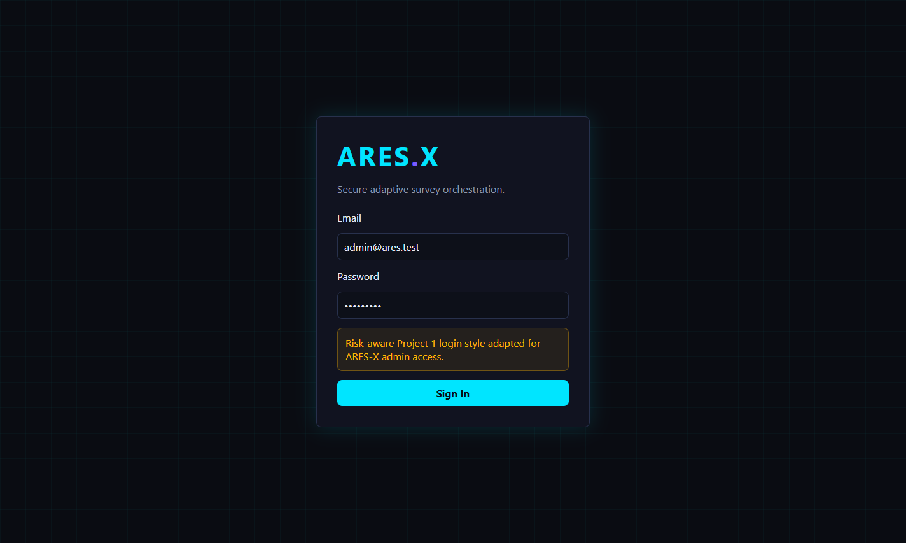
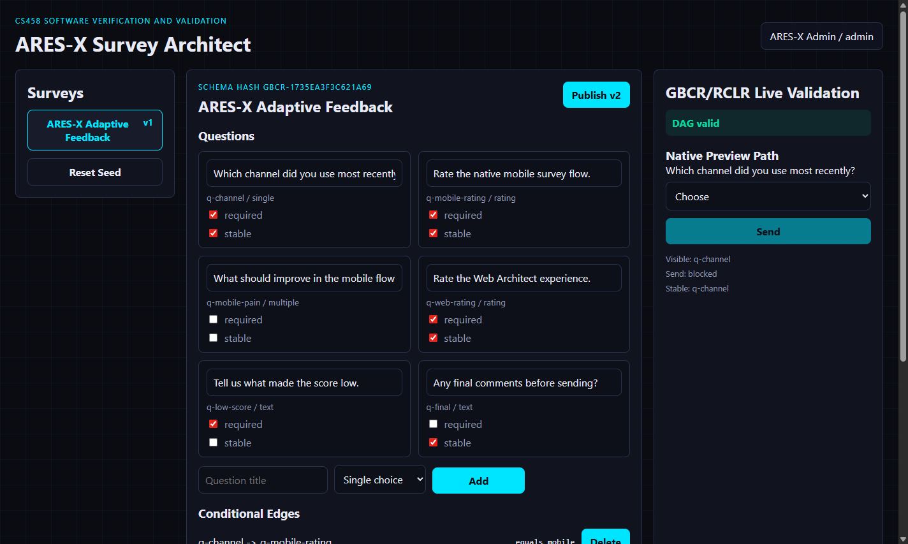
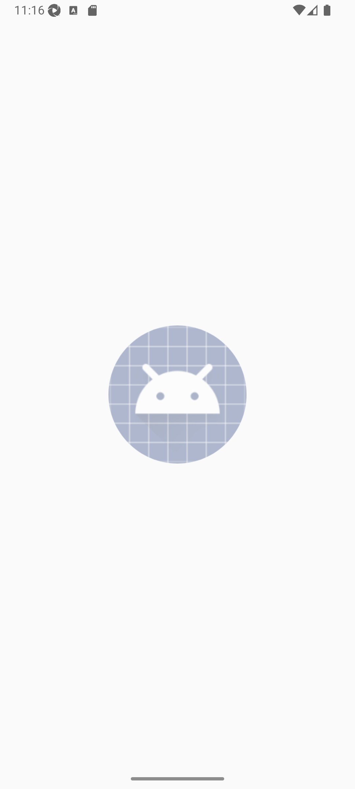
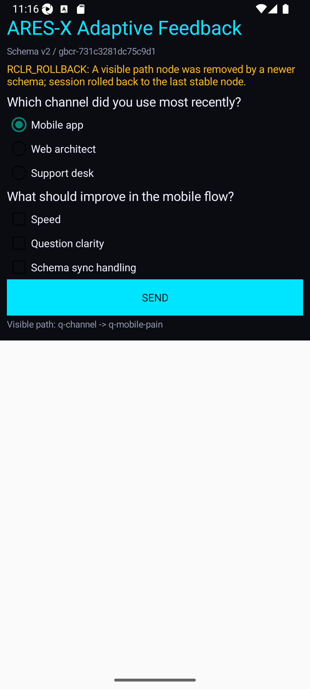

CS458 Software Verification and Validation, Spring 2025-2026
Group: [Name Surname] - [Email] - [Student ID]
Submission date: 2026-04-22
LLM assistance: OpenAI Codex/GPT-5 in Codex Desktop, used on 2026-04-21 for implementation scaffolding, test design, and report drafting. Final report wording and academic responsibility should be reviewed by the group.
ARES-X combines a responsive Web Architect, a JSON-backed Express API, and a native Android Kotlin client. The Web Architect designs and publishes dynamic survey schemas. The mobile client adapts the Project 1 ARES login style and renders the active survey recursively using the same GBCR/RCLR logic.
The survey is treated as a directed acyclic graph. Nodes are questions and edges are conditional predicates. The Send button is enabled only when all currently visible required questions on the valid path are answered and no orphan or zombie node exists.




Admin -> Login, Design Survey Schema, Publish Versioned DAG Mobile Participant -> Native Login, Answer Dynamic Survey, Submit Valid Path Publish -> Cross-Platform Schema Sync -> Atomic Recovery / Rollback
Start -> Login -> Fetch Survey -> Render Roots -> Answer -> Run RCLR Run RCLR -> Version Changed? -> Atomic Recovery or Rollback Run RCLR -> Complete Visible Required Path? -> Enable Send -> Submitted
LoggedOut -> SurveyList -> ActiveSession -> Resolving Resolving -> ActiveSession | AtomicRecovered | RolledBack | ConflictFlagged ActiveSession -> Submitted
Admin Web -> Backend: publish schema v2 Android -> Backend: PATCH answers(clientVersion=v1) Backend -> RCLR: compare v1 DAG with current DAG RCLR -> Backend: atomic_recovery or RCLR_ROLLBACK Backend -> Android: sanitized answers, stable node, current schema
SurveySchema *-- SurveyQuestion SurveySchema *-- ConditionalEdge RclrEngine --> SurveySchema JsonStore --> SurveySchema MainActivity --> RclrEngine
GBCR validates the schema graph before publish. It checks duplicate nodes, missing edge endpoints, missing predicate references, duplicate edges, root availability, and cycles. RCLR starts at root questions, traverses only satisfied conditional edges, and records visible nodes in topological order.
export function resolveVisibility(schema, answers) {
const roots = validation.roots;
visit(root);
for each outgoing edge:
if predicateSatisfied(edge, answers) visit(edge.to)
blockers = visible required questions without answers
sendEnabled = blockers.empty && no orphanQuestionIds && DAG valid
}
When mobile sends answers for an older schema version, the backend compares the old visible path with the current DAG. If answers map cleanly, it returns atomic_recovery. If a visible node was removed, an answered node was deleted, or a zombie/orphan would appear, it returns RCLR_ROLLBACK or RCLR_CONFLICT and the mobile UI re-renders from the stable node.
| Layer | Automation | Purpose |
|---|---|---|
| Shared logic | Vitest | DAG validation, visibility, Send gating, atomic recovery, rollback. |
| Backend | Supertest | Login, publish version increment, session conflict responses. |
| Android | JUnit | Kotlin RCLR parity and hidden answer clearing. |
| Web | Selenium | Login, designer edit, validation status, publish reflection. |
| Mobile | Appium | 10 non-trivial native UI and logic cases. |
| Cross-platform | Selenium + Appium | Concurrent schema mutation during mobile answer selection. |
expect(resolveSyncConflict(oldSchema, newSchema, answers).action).toBe('rollback');
assert.match(await appium.text('conflict-banner'), /RCLR_ROLLBACK|RCLR_CONFLICT/);
assert.doesNotMatch(await appium.text('visible-path'), /undefined|zombie/i);
| User | Password | Role |
|---|---|---|
| admin@ares.test | Admin123! | Admin |
| alice@ares.test | Test1234! | Mobile participant |
| bob@ares.test | Secure99# | Mobile participant |
| carol@ares.test | Pass@word1 | Mobile participant |
npm test npm run typecheck npm run build:web gradle -p mobile clean testDebugUnitTest gradle -p mobile assembleDebug npm run test:e2e:web npm run test:e2e:mobile npm run test:e2e:sync